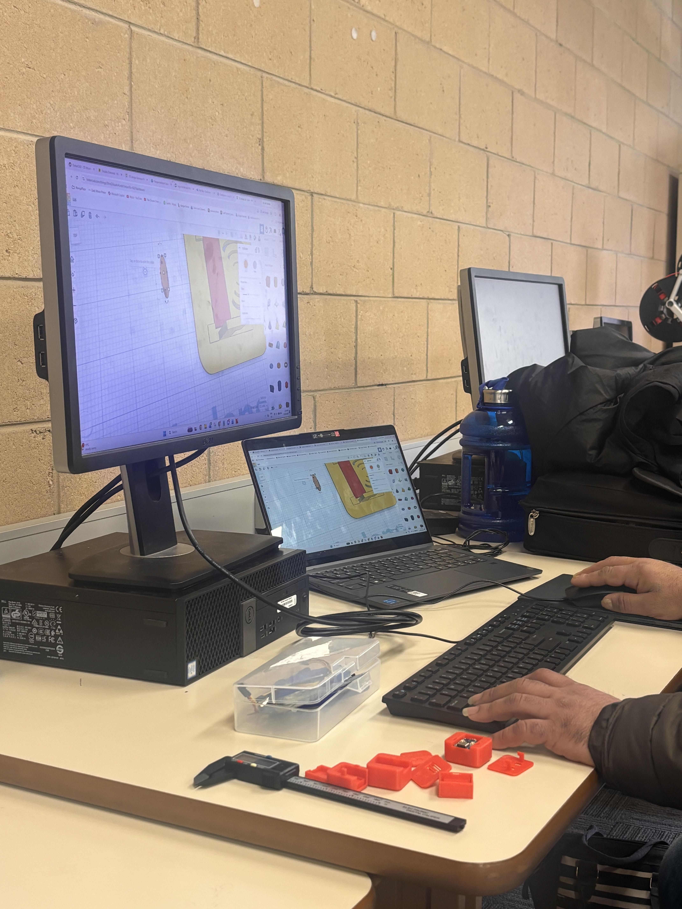

ITERATION 03
Overview
This page explains the process taken to reach the final product.

Prototype Comparison
| Prototype #1 | Prototype #2 | Prototype #3 |
|---|---|---|
| Strengths: Learning moment, allowed me to understand the process better. | Strengths: Had more structure, found the simple box shape works and using shapes like starts allows for creative forms of airflow. | Strengths: Final design was the best of all prototype, had good button function, is strong and meets the requirements which were set. |
| Weaknesses: Lacked any structure and fell apart moment after print. | Weaknesses: Lid didnt fit base, no enough room for port to sit inside. | Weaknesses: The lid does move slightly which could make the buttons not be always in range with the nubs on the lid which could cause some error for the user. |
| Application: Need to keep the design simple and focus on more blocky shapes. | Application: Found the sqaure shape works well, need to ensure shape fits better in next print. | Application: Thinner elements allow for flex and can be used for things like buttons while retaining stregnth. It is important to consider all users and edge cases to avoid the person using the product not make any mistakes. |